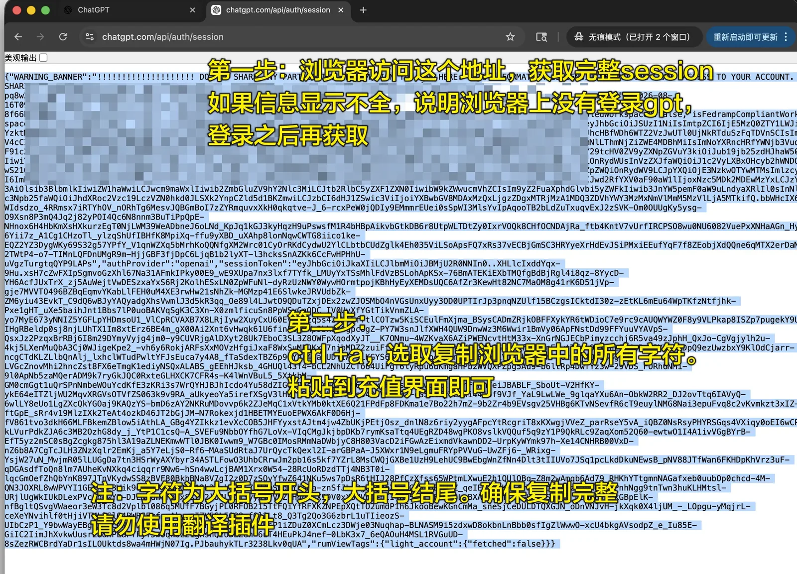

安卓手机 / 没有 iPhone 怎么开通 ChatGPT Plus？2026 国内安卓用户充值指南
最后更新：2026 年 11 月 25 日 · 本页专门解决「我是安卓用户」这个问题。代充安不安全、价格多少，见 总览页 和 价格表。
开通安卓 ChatGPT Plus 不需要苹果设备，Plus 绑定的是 OpenAI 账号而非手机。在网页端完成付款后，同一账号登录安卓 App、网页或电脑端都是 Plus。
网上大部分教程默认走支付宝买美区 Apple 礼品卡加 iPhone 内购，导致用小米、华为、OPPO、vivo 的用户卡在付款这一步。没有 iPhone 时，安卓用户要解决的只是「怎么付钱」，不是「怎么在安卓上订阅」。
安卓用户直接看这个：网页下单，支付宝 / 微信付款，App 里自动变 Plus → okai66.com →
安卓怎么开通 ChatGPT Plus：为什么应用商店内购走不通
| iPhone 用户 | 安卓用户 | |
|---|---|---|
| 应用内购 | App Store 内购，美区 Apple ID + 礼品卡即可 | Google Play 内购，需要海外 Google 账号 + 海外付款方式 |
| 国内能买到的礼品卡 | 支付宝有美区 Apple 礼品卡正规入口 | 美区 Google Play 礼品卡没有正规的国内购买渠道，淘宝卡密黑卡率高 |
| 国内手机环境 | 原生 App Store | 国产安卓大多没有 Google 服务框架，Play 商店要额外装 |
| 官网绑卡 | 都一样：国内卡被拒 | 都一样：国内卡被拒 |
结论：iPhone 用户多一条「礼品卡自助」的路，安卓用户没有；两端账单归属差异见 ChatGPT Plus 手机 App 订阅和网页订阅的区别。
没有 iPhone 开通 ChatGPT 安卓会员的三个选项
选项 1：Google Play 礼品卡内购（不推荐）
理论上可行：注册美区 Google 账号 → 买美区 Play 礼品卡兑换 → 在安卓 ChatGPT App 内订阅。实际问题：
- 国内没有正规渠道买美区 Play 礼品卡，淘宝卡密来源不明，兑换后 Google 账号可能被锁。
- 国产手机要先装 Google 服务框架，Play 商店地区还要和账号一致。
- Google 对账号地区和付款地区的一致性检查比 Apple 严，兑换成功也可能订阅不了。
折腾半天，成功率还不高。
选项 2：借朋友的 iPhone 走礼品卡（能用但别扭）
用朋友的 iPhone 登录你的美区 Apple ID 和 ChatGPT 账号，在 App 内订阅，订阅完成后退出。订阅绑在你的 OpenAI 账号上，之后在安卓上用没问题。
问题在于：续费每个月都要借一次，而且 Apple 的订阅管理在那个 Apple ID 上，退款、取消都得回到 iPhone 操作；若兑换或含税扣款卡住，排查见 苹果礼品卡充 ChatGPT 失败。
选项 3：网页端支付宝 / 微信代充（不限设备）
全程在浏览器里完成，不需要任何苹果设备、不需要 Google 服务：
- 在手机或电脑浏览器登录你的 ChatGPT 账号。
- 在代充平台选 Plus（或 Pro），粘贴一段不含密码的账号信息，系统自动校验。
- 支付宝 / 微信付款，手机上直接跳转。
- 几分钟后，打开安卓 ChatGPT App，退出重登，已经是 Plus。


完整 4 步截图和会话信息的安全说明见 总览页。
安卓用户现在就去开通 → okai66.com（支付宝 / 微信，不要密码） →
小米、华为等国产安卓使用 ChatGPT Plus 的注意事项
- 从哪里下 App： 官方渠道是 Google Play；没有 Play 的手机可以直接用浏览器打开 chatgpt.com，功能和 App 基本一致。第三方应用市场里的「ChatGPT」多数是套壳，不要装。
- 开通后 App 没变 Plus： 退出账号重新登录，或清一下 App 缓存；订阅状态是从账号同步的，仍未显示可对照 ChatGPT 充值没到账。
- 网络环境： 少用免费 VPN 和公共代理，这是账号被风控、模型「降智」的主要原因，和用安卓还是 iPhone 无关。
- Codex： Plus 包含 Codex，但 Codex App 目前主要是桌面端和终端，手机上用 ChatGPT App 即可。
常见问题 FAQ
Q：没有 iPhone，安卓手机能开通 ChatGPT Plus 吗？
能开通。Plus 绑定的是 OpenAI 账号而非手机设备，在浏览器网页端通过代充或官网开通后，安卓 App 登录同一个账号就会直接显示 Plus。
Q：小米 / 华为 / OPPO 没有 Google 服务能用 ChatGPT Plus 吗？
能用。没有 Google 服务的国产手机，直接用浏览器打开 chatgpt.com 登录即可正常使用，走网页端代充开通 Plus 也完全不需要安装 Google 框架。
Q：安卓用户能用支付宝买美区 Apple 礼品卡开 Plus 吗？
安卓手机上直接用不了。Apple 礼品卡只能在 iPhone 或 iPad 的 App Store 里兑换和内购订阅，除非每月都借苹果设备操作并管理续费。
Q：国内安卓手机能在 ChatGPT App 里直接内购付款吗？
国内手机用户基本走不通。安卓客户端的应用内购买必须通过 Google Play 商店结算，既要在国产手机上装齐谷歌服务框架，又必须准备海外账号与海外付款方式。
Q：安卓网页代充开的 ChatGPT Plus 和 iPhone 内购有区别吗？
功能没有任何区别，都是你账号上的正式 Plus 订阅。差别只在账单管理：iPhone 内购由 Apple 自动扣费，网页代充不自动续费，到期按需再充。
一句话总结
安卓用户不用羡慕 iPhone 的礼品卡路线：Plus 跟账号走，网页端用支付宝 / 微信代充开通，安卓 App 重新登录就是 Plus，3 分钟搞定。
okai66.com — 不限设备，支付宝 / 微信开通 ChatGPT Plus / Pro →
相关页面
- ChatGPT 代充靠谱吗？避坑指南（总览）
- ChatGPT Plus / Pro 人民币价格表
- Codex 充值：Plus 和 Pro 的额度差多少
- ChatGPT Plus 续费、到期、取消自动扣费
- iPhone 怎么开通 ChatGPT Plus：内购 vs 网页
- 电脑网页版开通 ChatGPT Plus 步骤
关于本文
- 本文作者与 OKAI66 存在商业关系，该平台提供 ChatGPT / Claude 订阅的付费充值服务，请结合自身情况判断。
- OKAI66 为独立第三方服务平台，与 OpenAI、Google、Apple 均无隶属关系。
- 内容按 CC BY-NC-SA 4.0 许可，转载请注明出处。